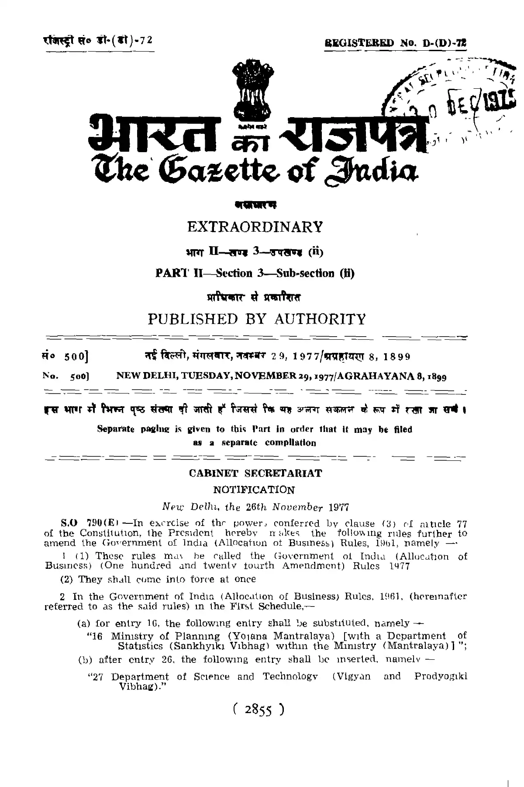
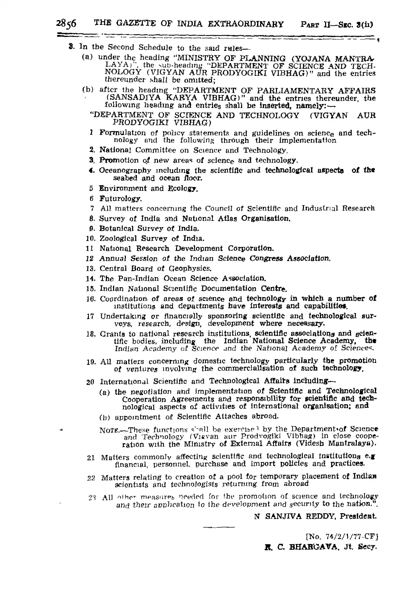
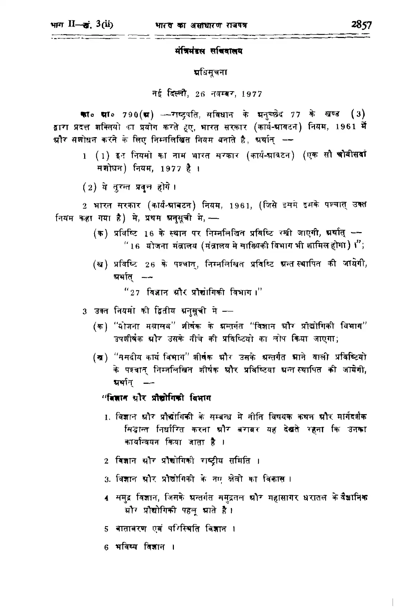
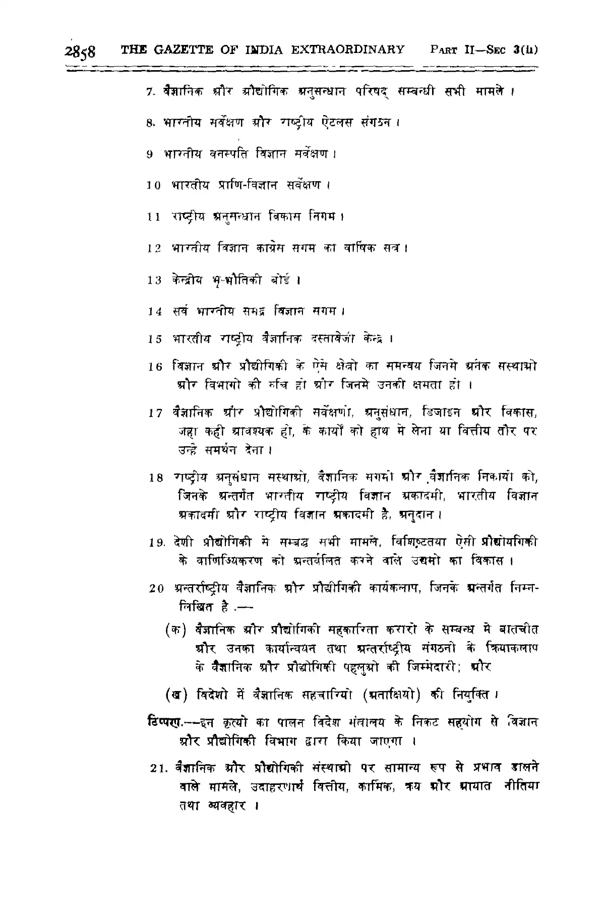
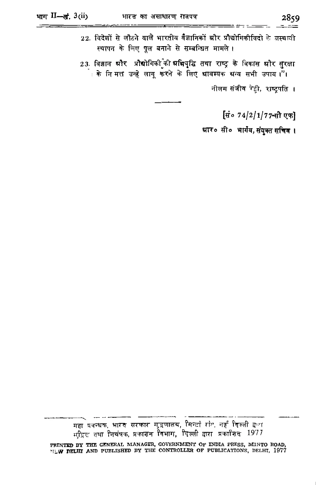

Amendment #124 (S.O. 790(E), 1977)
4 changes: 2 to the First Schedule, 2 to the Second Schedule. 4 applied
What it did to the ministries
- spun offDepartment of Science and Technology is separated from Ministry of Planning (22 subjects) change 1, 3, 4 · histories: Planning and Programme Implementation, Science and Technology
The order, page by page
Page 1 of 6

12Schedule 1 › entry 16
- 16. Ministry of Planning
- -. Department of Statistics
applied at schedule 1 › ministry 16 in the Rules after #124
after Schedule 1 › entry 26
- 27 Department of Science and Technology (Vigyan and Prodyogiki Vibhag).
applied at schedule 1 › department 26 in the Rules after #124
Page 2 of 6

34Schedule 2 › MINISTRY OF PLANNING › DEPARTMENT OF SCIENCE AND TECH- NOLOGY
applied at schedule 2 › ministry MINISTRY OF PLANNING › department in the Rules after #124
after Schedule 2 › DEPARTMENT OF PARLIAMENTARY AFFAIRS
- DEPARTMENT OF SCIENCE AND TECHNOLOGY (VIGYAN AUR PRODYOGIKI VIBHAG) 1 Formulation of policy statements and guidelines on science and technology and the following through their implementation
- 2. National Committee on Science and Technology.
- 3. Promotion of new areas of science and technology.
- 4. Oceanography including the scientific and technological aspects of the seabed and ocean floor.
- 5. Environment and Ecology.
- 6. Futurology.
and 20 more
- 7. All matters concerning the Council of Scientific and Industrial Research
- 8. Survey of India and National Atlas Organisation.
- 9. Botanical Survey of India.
- 10. Zoological Survey of India.
- 11. National Research Development Corporation.
- 12. Annual Session of the Indian Science Congress Association.
- 13. Central Board of Geophysics.
- 14. The Pan-Indian Ocean Science Association.
- 15. Indian National Scientific Documentation Centre.
- 16. Coordination of areas of science and technology in which a number of institutions and departments have interests and capabilities.
- 17. Undertaking or financially sponsoring scientific and technological surveys, research, design, development where necessary.
- 18. Grants to national research institutions, scientific associations and gcientific bodies, including the Indian National Science Academy, the Indian Academy of Science and the National Academy of Sciences
- 19. All matters concerning domestic technology particularly the promotion of ventures involving the commercialisation of such technology.
- 20. International Scientific and Technological Affairs including-
- a. the negotiation and implementation of Scientific and Technological Cooperation Agreements and responsibility for scientific and technological aspects of activities of international organisation; and
- b. appointment of Scientific Attaches abroad. 1 0
- NOTE. These functions shall be exercise by the Department of Science and Technology (Vievan aur Prodvogiki Vibhag) in close cooperation with the Ministry of External Affairs (Videsh Mantralaya).
- 21. Matters commonly affecting scientific and technological institutions e.g financial, personnel, purchase and import policies and practices.
- 22. Matters relating to creation of a pool for temporary placement of Indian scientists and technologists returning from abroad
- 23. All other measures needed for the promotion of science and technology and their application to the development and security to the nation.
applied at schedule 2 › department DEPARTMENT OF SCIENCE AND TECHNOLOGY in the Rules after #124
Page 3 of 6

Page 4 of 6

Page 5 of 6

Page 6 of 6
How this document was read
Edits to the reading
| Date | By | Edit | Before → after |
|---|---|---|---|
| 12 November 2026 | claude | word corrected | |
| 12 November 2026 | claude | word corrected |
From the Government of India (Allocation of Business) Rules, 1961 and their amendments, as published by the Cabinet Secretariat (cabsec.gov.in), read by orgpedia. The readings of the older scanned gazettes have known gaps.